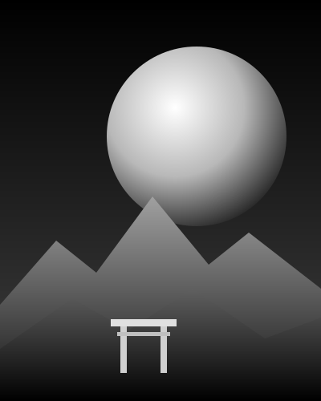

Every block uses Nightwire tokens only (--nw-chrome, --nw-line, --font-mincho…), so it follows data-intensity. Switch the intensity here (or with ?i=archive|operator|combat) to see the glow and the grain react:
.nw-chip, square and mono (not .tag, which keeps the stamp font and the kanji slot)
.nw-section-head + .nw-display
Three intensities, one set of tokens. Walk the strip and open any view at full size.
.nw-section-head-chrome variant (fading rule + glowing kanji).kv-row is a spec sheet in v3, plus .kv-note and .kv-swap
.nw-index (hover the rows)
.nw-accordion on native <details>, accessible, no JS
tailwind.preset.js exposes the same tokens as nightwire.css, so you can use classes or utilities..nw-reticle, .nw-halftone, .nw-barcode. The halftone is plain CSS over any <img>

.panel without a box, .card outlined, opt-in frame .panel.nw-reticle
Last deploy 4 min ago. No errors.
.nw-grain on <body>. Its strength is the --nw-grain knob: 0 at archive, stronger at combat. It is on in this page (toggle it above)
.nw-wordmark for footers and covers